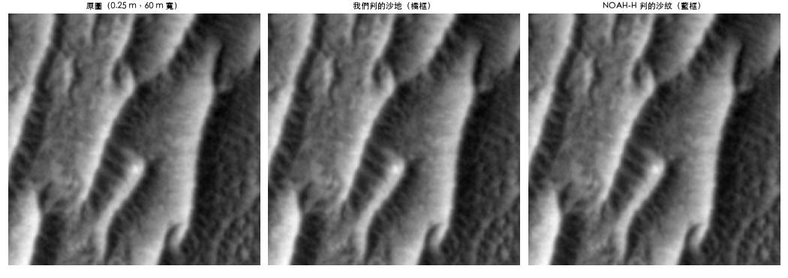
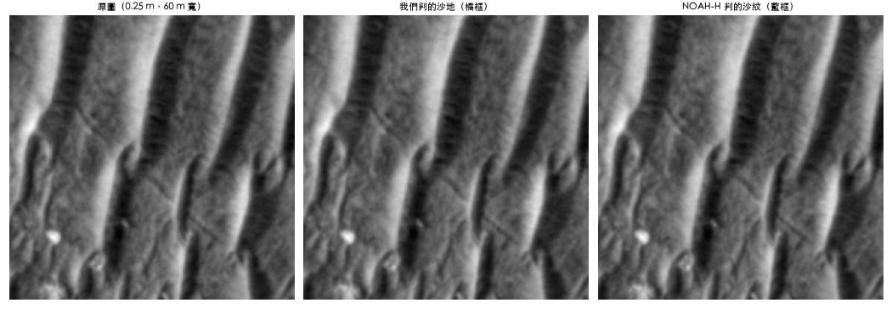
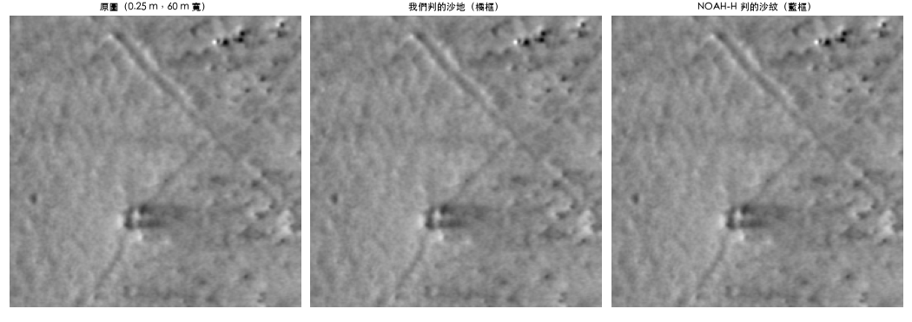
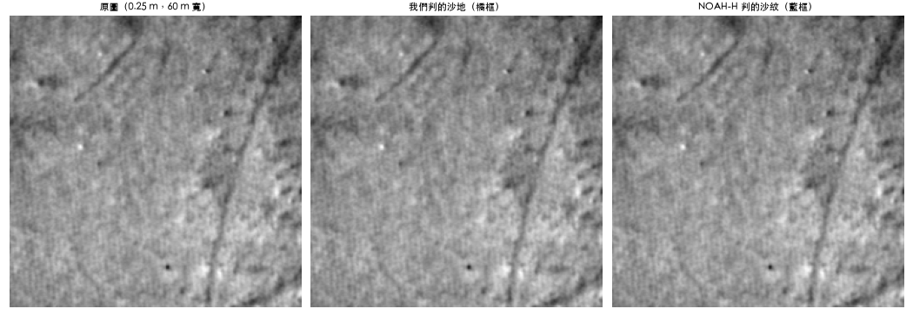
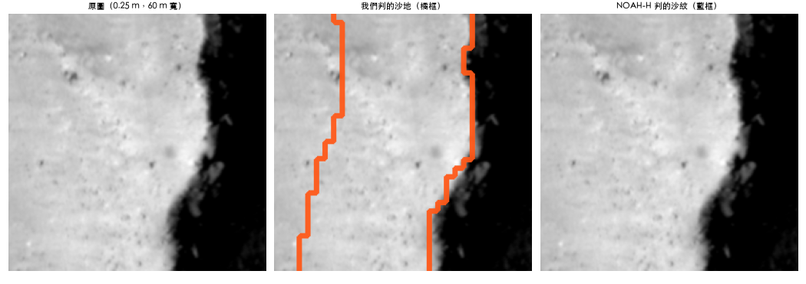
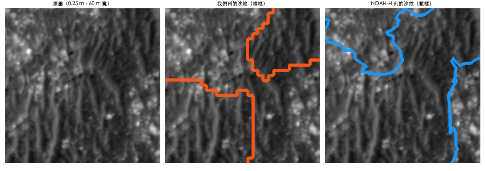
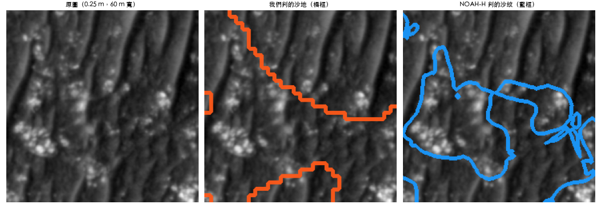
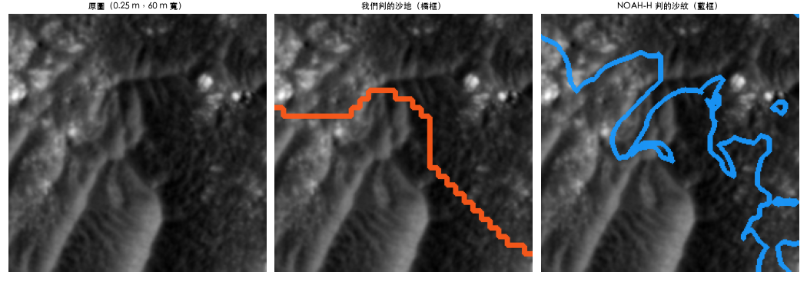
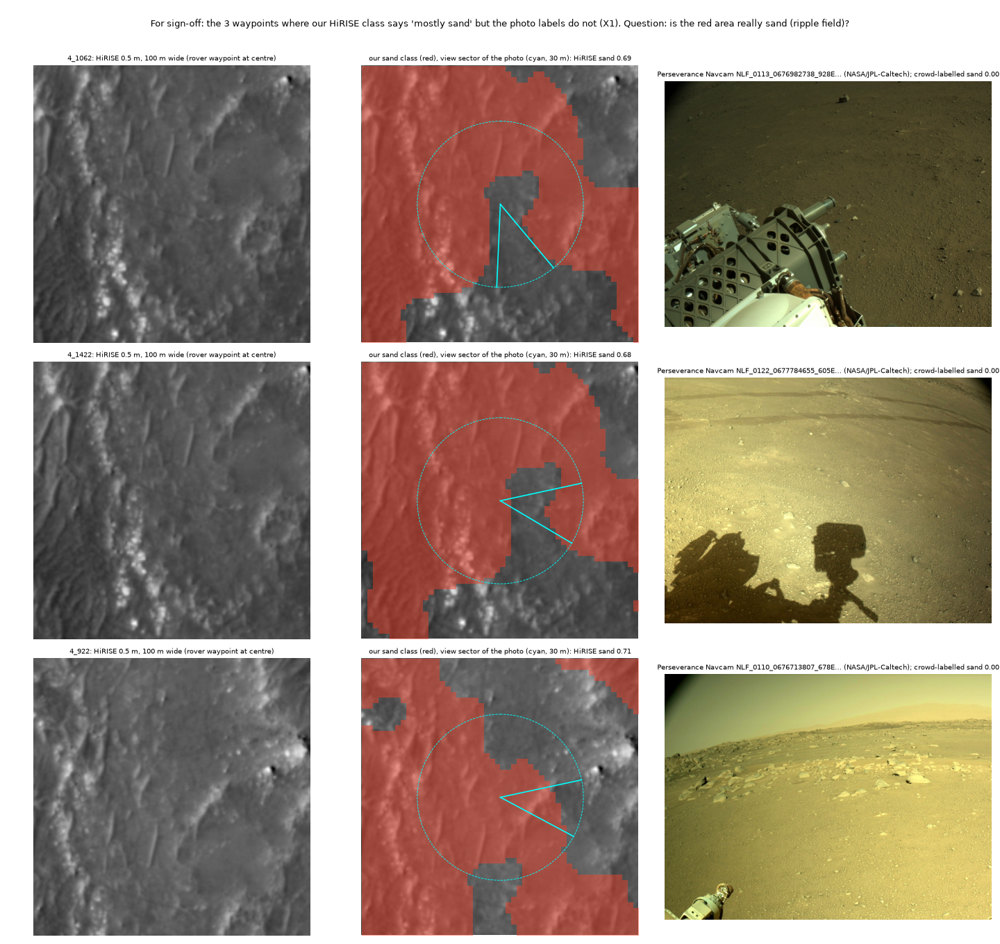

判定：一致（M1 漏判方向 0.89，n=614：一致；M2 誤判方向 0.00，n=477：一致）。NOAH-H 只看得到我們沙地的 67%（粗沙紋層）
每張小圖 60 m 寬，三格：原圖｜我們判的沙地（橘框）｜NOAH-H 判的沙紋（藍框）。每張只要回答：像上排的「沙」、像上排的「不是沙」、還是看不出來？
NOAH-H classes: Wright et al. 2022, CC BY 4.0（第三方深度學習模型，同樣只看 HiRISE；一致性對照，不是驗證）。內部 QA，不上產品頁。種子 20261114。
範例 1：像沙／不像沙／看不出來？

範例 2：像沙／不像沙／看不出來？

範例 1：像沙／不像沙／看不出來？

範例 2：像沙／不像沙／看不出來？

爭議 1：像沙／不像沙／看不出來？

爭議 1：像沙／不像沙／看不出來？

爭議 2：像沙／不像沙／看不出來？

爭議 3：像沙／不像沙／看不出來？

HiRISE 說是沙、但照片的群眾標註說不是（X1）。每列同樣只問：像沙／不像沙／看不出來？
